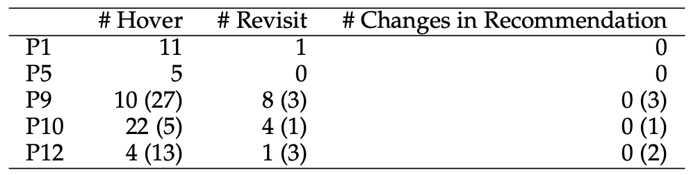

Vis4Grad
A Visual Analytic Approach for Promoting Process Awareness in Graduate Admissions
About Vis4Grad
Graduate admissions is a complex decision making process where cognitive and implicit biases may impact the way reviewers individually and collectively make decisions. Vis4GRAD is an interactive visualization system that promotes reviewers’ self-reflection and scrutiny to ensure fair and consistent review processes. The system supports
- Reviewing applications (viewing application materials, entering ratings),
- Analysis of individual review behaviors (time spent, ratings of competitiveness) across attributes such as race and gender of applicants,
- Facilitating group discussion and admissions decisions, and
- Analysis of committee-level review behaviors.
System Overview
Individual Summary
Group Summary
Demo Video
Findings from 2022 Case Study
The Vis4Grad system was used for the 2022 Ph.D.admissions cycle in the Computer Science and Informatics program at Emory. Below we summarize some findings from our case study.
Vis4Grad illuminates disparities in time spent across applications.
The above figure highlights that individual reviewers from the admissions committee (P1-P12) had highly variable distributions of time spent across male and female applicants. Many reviewers (P1, P5, P7, P10, P11) spent more time on average reviewing male applications than female applications. Some reviewers, on the other hand, spend more time on female applicants on average (P6, P12), while others allocated time relatively evenly (P3, P4, P9).
Vis4Grad affirms admissions decisions proportional to the application pool across dimensions like race and gender.
While there was individual variability among reviewers on time spent across applications, the admissions decisions were ultimately relatively proportional across gender (left) and race (right).
Vis4Grad led to changes in reviewers' awareness, behaviors, and decisions.
 Interactions with the Individual Summary page led to increased awareness of review practices (" hadn’t really spent time on their writing sample"), led them to behave differently ("So I went back and I had the chance to read over it"), and ultimately change some decisions (" think a student had uploaded something in the writing sample but they hadn’t mentioned it on their CV, so it was a good chance to revise what I had scored for their research preparednes"). The table above also shows that the interactions with the Individual Summary page (hovers) led these reviewers (P1, P5, P9, P10, P12) to behave differently (revisit some applications) and make different decisions (changes in recommendation).
Quotes
[about committee-level calibration] ...was super helpful for helping me to calibrate how tough I am as a reviewer for the ratings.
[about heightened awareness] ...I identified outliers like someone that I had rated as having high research preparedness but I did not rate them overall very highly.